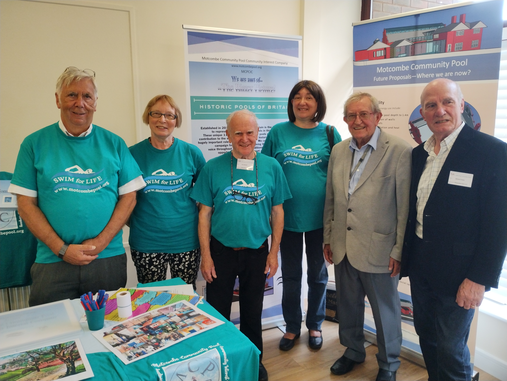

| i. MCPCIC Mission Statement | vii. Governance |
| ii. Summary | viii Community Involvement |
| iii. Background | ix Business Planning |
| iv. EBC | x. Space Planning |
| v. MCPCIC | xi. Technology |
| vi. FMPC | xii. Phasing |
Our mission is to create a sustainable business plan to secure funding for the repair, rejuvenation, and transformation of the historic Motcombe Pool. Our objective is an holistic hub supporting health and wellness in the community. The project can potentially be delivered in phases allowing for approaches to different funding sources with complementary support from the community of Friends.
Motcombe Pool is a much-loved community facility that was forced to close due to Covid restrictions in March 2020. It is an iconic landmark that was designated an Asset of Community Value in April 2022. At the same time, two local councillors set up a Community Interest Company aka Motcombe CIC. The express purpose of the CIC is to develop a sustainable business plan, to secure alternative funding, and hence to rejuvenate and reopen the Pool. In addition to the repair and upgrading of the building fabric, proposals involve rationalisation and reorganisation of existing spaces to incorporate a health and wellbeing community hub. This scheme will generate additional income streams, limit staff costs and, with the introduction of new and renewable energy technology, reduce expenditure on services to ensure long-term viability. The project can potentially be delivered in stages allowing for streamlining of differing funding sources and support from the community.
Motcombe is one of only 10 early indoor pools currently registered with Historic Pools of Britain. It is a fine example of Edwardian Municipal Baths & Pool deserving to be retained as an important part of Eastbourne’s heritage. Lying within the Old Town Conservation Area, designated in 1969 and extended 1984, its significance in terms of local and national heritage is clear. Located on an existing aquifer that has supplied spring water for the Pool from day one, the site is adjacent to Motcombe Gardens where a small lake is also fed from the source of the Bourne stream. Land for the Baths was purchased in 1904 from the Duke of Devonshire by Eastbourne Council specifically for the construction of Municipal Baths. Built by the local family firm of Peerless Dennis & Co. Typical of its time, it features a main Pool Hall with large gable windows and lightweight steel ‘scissor’ trusses supporting a double-pitched roof. There are linear lanternlights over the main spaces, and the stylistic glazed brick interiors remain in good condition. Accommodation originally included two separate spaces providing slipper baths for men and women which were still in use until the late 1950s. These spaces were then converted respectively into male and female changing rooms replacing curtained cubicles on the pool perimeter. An attendant’s cottage was added in 1913. When Covid-19 restrictions forced the Pool to close in March 2020, it served a population of about 20,000 (2021 census) within a 1km walking distance within Old Town and Upperton wards. In the 3 years prior to closure, 55,000 annual swim-visits were recorded. There are no nearby equivalent alternatives for the Pool Family of local swimmers and small groups with additional support needs.
Although owned by Eastbourne Borough Council (EBC) the premises are currently leased to Wave Leisure as part of the borough-wide provision. Following closure, EBC commissioned an elemental condition survey in May 2021. This identified problems with building fabric and mechanical plant. Subsequent investigations found further structural issues and a leak in the pool tank itself. With the Council facing its own financial pressures because of Covid and needing to protect services for the most vulnerable in the community, it was unable to fund the repairs. It was therefore felt that the Pool would fit best within a Community Interest Company (CIC) model that could attract funding streams otherwise unavailable to the Council. EBC has been actively supporting the CIC in its formation and work so far and has pledged up to £250,000 for match-funding that will be available to complement successful funding bids.
Motcombe Community Pool Community Interest Company (MPCIC) was incorporated as a CIC in April 2022. As a social enterprise, it is a company Limited by Guarantee. The CIC team comprises a group of unpaid professional and technical volunteers with backgrounds in architecture, project management, property management, finance, insolvency and sustainability together with Councillors representing the local wards. MCPCIC is governed in accordance with its Articles of Association. Governance structures have been researched and established to ensure appropriate insurances, and information management and health and safety systems apply. Policy statements have been produced covering Finance, Health, and Safety, GDPR and Safeguarding. MCPCIC has also agreed a code of conduct outlining principles for adherence by all directors, members, and volunteers. Policies are reviewed regularly with new or updated policy documents issued as and when required by legislation or because of the growth of the organisation. As a registered Company, all necessary Company returns are filed within the legal timeframe via online access to Companies House. Our finance policy defines the basis upon which our bank account operates. Insurance has been obtained covering public and product liability, employers’ liability (including volunteers), directors’ indemnity and legal indemnity. Cover is kept under review in line with current legislative requirements or change in company circumstances.
Following closure there were many calls from the community for the Pool to be reopened. An on-line petition formed on change.org in September 2021 received over 3000 signatures. The Friends of Motcombe Pool (FOMP) was established and the Council held an open day at the Pool House on 2nd April 2022. A subsequent survey administered by FOMP produced a range of ideas for the future of the Pool, the principles of which have been incorporated by the CIC into current proposals. Initially FOMP was essentially a group of Facebook followers which later proved difficult to manage. FOMP has now been reformed as Friends of Motcombe Pool CIC (FMPC) to include a structured subcommittee leading the group as it complements the work of the CIC. Its focus is to promote community engagement, fundraising and outreach. By providing valuable support to the CIC focussing on public awareness, FMPC is an important conduit for consultation.
Part of the CIC’s mission is to promote and embrace opportunities that can maintain interest and community engagement at the same time building social value in the project. The following curated events so far involved the community in 2023, whilst funds are being sought and business planning explored:
The CIC’s business planning activity recognises that the work required goes well beyond repairing the building fabric. Pre-closure annual figures highlight that significant changes need to be made to increase income and reduce expenditure. An overall business plan is being developed to secure a long-term sustainable future for the Pool. In the past, the building evolved in response to changing demands to secure its future. Slipper baths were removed to make room for better changing facilities and coal fired boilers were replaced by gas. There are opportunities for this building to continue to evolve to meet current and future demands. New ideas in terms of reconfiguration point to a more efficient use of space and more manageable staffing costs whist providing for additional income streams to be secured. Developments in technology are available which will reduce energy demand whilst exploiting new sources of renewable energy. Together these improvements will form the basis for a sound financial and sustainable future.
An Expression of Interest was submitted by the CIC to the Department of Levelling Up, Housing and Communities (DLUHC) at the end of July 2023, and as a result, has been invited to make an application to the Communities Opportunity Fund (COF) Round 3. Preparations are under way to assemble a strong case for this application that is likely to be submitted in the spring of 2024. Also in September 2023, Motcombe was nominated as a leisure facility eligible for potential funding within EBC’s application to Sport England’s Swimming Pool Support Fund (SPSF) carbon reduction initiative. The Council and the CIC’s advisors are working closely to assemble evidence and collate a strong case for the Pool.
The survey of 2022 organised by FOMP indicated additional functions that the community would like to see incorporated in the future. These included a café, a studio, a gym, plus potentially consulting rooms for health and wellbeing. Using this as a guide, the CIC has incorporated these items into spatial rationalisation and proposals for future services.
The main entrance to the Pool complex is a cramped lobby and office space. It provides direct access currently to the female changing facilities. Male swimmers must access the Pool via a separate external entrance forming part of the Pool House. This arrangement is difficult to control and offers little opportunity for retail sales or space for relaxing with friends after swimming.
In its current Guide for Community Pools, Sport England recommends ‘Village Changing’ where all swimmers access one area which is subsequently divided to provide private personal space. This ‘Village Changing’ approach offers several advantages including:
The existing female changing area has sufficient space available in to meet current Sport England recommended standards of provision, including for new toilets, pre, and post-swim showers. Importantly, the male changing room can then be converted into a studio space. In addition, the two-storey attendant’s cottage which adjoins the studio has ground floor space that can be configured as an open-plan area for low impact sports promoting individual strength and agility for all ages. Provision of a new lift to the first floor will provide access for consulting and/or therapy rooms and a focus on mental health. There is also potential for access to a roof garden overlooking Motcombe Gardens and to a high-level spectator gallery for the pool. With minimal cost, these new dry-side activity spaces can become a vibrant a health and welfare hub for the community whilst generating necessary additional revenue to help sustain the Pool. To link the dry and wet-side activities we propose introducing a new glass fronted extension comprising a centralised reception area combined with a spacious café. The CIC proposes to reduce the maximum depth of the Pool to 1.4 metres. This has three advantages: It will help to ameliorate the structural issues with the Pool tank, to reduce the energy demand for heating water, and to render staff costs more manageable owing to the mitigation of the deep-water hazard.
The recent dramatic rise in the cost of energy has resulted in many pools becoming uneconomic to run and many hundreds closing. At the same time there is a move to eliminate fossil fuels. Consistent Eastbourne Council’s own Net Zero target for 2030, the CIC has investigated ways of reducing the heating load by identifying alternative renewable sources of energy.
Working with Brighton & Hove Energy Services Cooperative (BHESCo), at the end of 2022 the year, the project was selected as one of only five nationwide, to be included in a carbon emission reduction case study. Funded by social capital, the study concluded with recommendations outlining the optimum sustainable energy potential of the Pool facility.
The building already includes some cavity walls which were innovative at the time of construction (1904). Such walls can be insulated without affecting the decorative internal glazed brickwork, a key feature of the building. The large multipaned windows would be difficult and expensive to replace in double glazed units. In the context of a heritage building and in a conservation area, to preserve the external appearance, existing windows can be sealed fitted with secondary double-glazed units applied internally.
Up to 40% of heat is lost through ventilation, which would have been a major factor in the Motcombe balance sheet. Introducing mechanical ventilation with heat recovery will reduce the overall demand and importantly, provide for controlled humidity. The open roof lantern lights can then be sealed and have applied secondary glazing.
The original heating source at Motcombe was coal fired boilers located in the basement. These were later replaced by the current gas fired boilers. With new technology, there is an excellent opportunity in principle, to exploit the-site well-head as the water source for a heat pump and the large south facing roof area for solar PV panels. Preliminary investigations by Nicholls Boreholes (one of the CIC’s specialist engineering advisors and sponsor) have confirmed that this is in principle a viable solution, and a corresponding Pre-Application licensing application to the is currently in process with the Environment Agency.
The CIC recognises that the entire project may take some years to complete. (We understand that restoration of Saltdean Lido took 8 years.) The CIC overall business plan can be achieved in phases given applicable funding from more than one funding source. Four phases are envisaged:
Phase 1: The Pool House and current male changing room reconfigured to form a Studio, Wellbeing and Health Hub. Arrangements can be made as necessary for access and servicing to be independent of the remainder of the site.
Phase 2: The repair and refurbishment of the Pool and the conversion of the current female changing area to form the Village Changing area with new toilets and showers. This will involve major works to repair the Pool plus the installation of ground water source heat pump and ventilation and heat-recovery air-conditioning plant.
Phase 3: A new extension to the front of the site will include a central reception area with a café forming a covered link between the wet-side and dry-side activities.
Phase 4: A roof terrace overlooking the adjacent historic Motcombe Gardens and walkway to a new high-level Pool viewing gallery for spectators.
